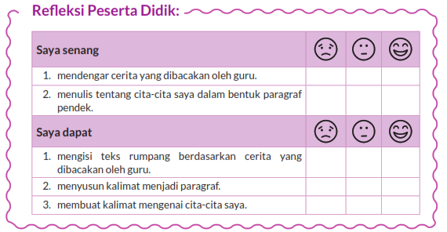
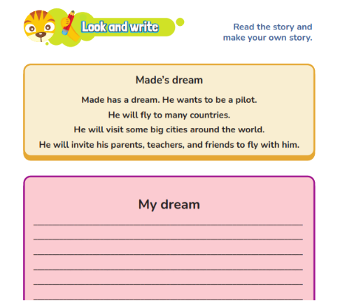
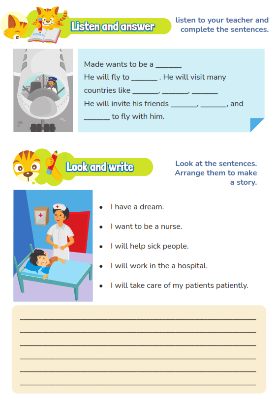
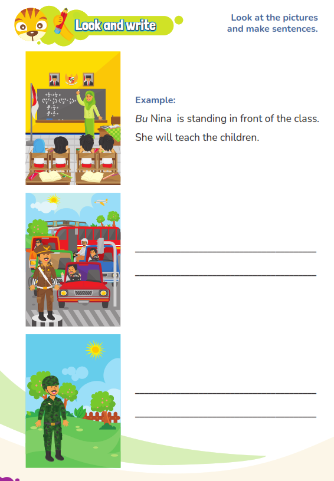
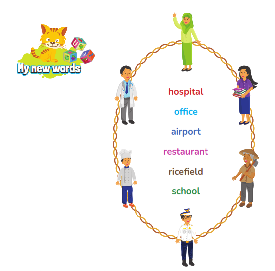

MODUL AJAR KURIKULUM MERDEKA
FASE B - KELAS VI SD
MATA PELAJARAN : BAHASA INGGRIS
INFORMASI UMUM
A. Identitas Modul
Nama Madrasah : .....................................................................................
Nama Penyusun : .....................................................................................
Mata Pelajaran : BAHASA INGGRIS
Fase / Kelas / Semester : B - VI / 2
Alokasi Waktu : .. JP x 45 Menit
Tahun Penyusunan : 20../20..
B capaian pembelajaran
Pada akhir Fase C, peserta didik memahami dan merespon teks lisan, tulisan, dan visual sederhana dalam bahasa Inggris. Mereka menggunakan bahasa Inggris sederhana untuk berinteraksi dan berkomunikasi dalam situasi yang familiar/lazim/ rutin. Peserta didik memahami hubungan bunyi huruf pada kosakata sederhana dalam bahasa Inggris dan menggunakan pemahaman tersebut untuk memahami dan memproduksi teks tulisan dan visual sederhana dalam bahasa Inggris dengan bantuan contoh.
C. Profil Pelajar Pancasila (PPP)
- Profil Pelajar Pancasila yang ingin dicapai adalah bertakwa kepada Tuhan Yang Maha Esa dan berakhlak mulia, bernalar kritis dan kreatif, bergotong royong, serta kebhinnekaan global.
D. 8 Profil LULUSAN
- Keimanan dan Ketakwaan terhadap tuhan YME
Individu yang memiliki keyakinan teguh akan keberadaan tuhan seta menghayati nilai-nilai spriritual dalam kehidupan sehari-hari
- Kewargaan
Individu yang memiliki rasa cinta tanah air, mentaati aturan dna norma social dalam kehidupan bermasyarakat, memiliki kepedulian, tanggungjawab social, serta berkomitmen untuk menyelesaikan masalah nyata yang terkait, keberlanjutan manusia dan lingkungan
- Penalaran Kritis
Individu yang mampu berpikir secara logis, analitis dan reflektif dalam memahami, mngevaluasi, serta memproses informasi untuk menyelesaikan masalah
- Kreativitas
Individu yang mampu berpikir secara inovatif, fleksibel, dan orisinal dalam mengolah ide atau informasi untuk menciptakan solusi yang unik dan bermanfaat
- Kolaborasi
Individu yang mampu bekerja sama secara efektif dengan orang lain secara gotong roying untuk mencapai tujuan Bersama melalui pembagian pesan dan tanggung jawab
- Kemandirian
Individu yang mampu bertanggung jawab atas proses dan hasil belajarnya sendiri dengan menunjukkan kemampuan untuk mengambil inisiatif, mngetasi hambatan, dan menyelesaikan tugas secara tepat bergantung pada orang lain
- Kesehatan
Individu yang memiliki fisik yang prima, bugar, sehat, dan mampu menjaga keseimbangan Kesehatan mental dan fisik untuk mewujudkan kesejahteraan lahir dan batin (well-being)
- Komunikasi
Individu yang memiliki kemampuan komunikasi untrapribadi untuk melakukan refleksi dan antarpribadi untuk menyampaikan ide, gagasan dan antarpribadi untuk menyampaikan ide gagasan, dan informasi baik lisan maupun tulisan serta berinteraksi secara efektif dalam berbagai situasi.
D. Sarana dan Prasarana
Media : LCD proyektor, komputer/laptop, jaringan internet, dan lain-lain
Sumber Belajar : LKPD, Buku Teks, laman E-learning, E-book, dan lain-lain
E. Target Peserta Didik
Peserta didik regular dari umur 11-12 tahun (tahap operasional konkret)
F. Model DAN METODE Pembelajaran
Pembelajaran dengan tatap muka menggunakan model pembelajaran kontekstual, PJBL, DEEP LEARNING (Mindful, Meanful, Joyful)
KOMPETENSI INTI
A. Tujuan Pembelajaran
- Peserta didik mampu melengkapi cerita rumpang berdasarkan teks yang dibacakan guru.
- Peserta didik mampu menyusun kalimat menjadi paragraf.
- Peserta didik mampu membuat kalimat berdasarkan gambar.
- Peserta didik mampu menuliskan cerita tentang cita-cita mereka.
B. Pemahaman Bermakna
Pada pembelajaran ini peserta didik mampu mengungkapkan apa yang mereka inginkan di masa yang akan datang dan menuliskannya dalam sebuah cerita (future activity).
C. Pertanyaan Pemantik
- Peserta didik mampu menyimak cerita yang menggunakan kata kerja bentuk lampau.
- Peserta didik mampu menjawab pertanyaan guru yang berhubungan dengan isi cerita.
D. Kegiatan Pembelajaran
KEGIATAN Pendahuluan
- Pembukaan yang Membangun Keterhubungan Emosional
- Guru membuka pembelajaran dengan salam yang penuh kehangatan dan menciptakan suasana belajar yang nyaman dan menyambut, misalnya: "Selamat pagi, teman-teman! Apa kabar hari ini? Siap untuk berbicara tentang impian besar kita?"
- Tujuan utama adalah membuat siswa merasa terlibat dan tertarik untuk mengikuti pembelajaran dengan penuh semangat.
- Pembiasaan yang Membangun Kedisiplinan dan Refleksi Diri
- Berdoa dengan Kesadaran: Guru mengajak siswa berdoa dengan penuh perhatian, sambil memberi ruang untuk refleksi pribadi mereka tentang apa yang mereka impikan dan harapkan untuk masa depan. Guru bisa mengatakan, "Mari kita berdoa dan merenungkan impian kita untuk masa depan."
- Memeriksa Kehadiran dan Kedisiplinan: Selain memeriksa kehadiran, guru juga memeriksa kerapihan dan kebersihan kelas. Guru bisa memberi apresiasi kepada siswa yang sudah menjaga kedisiplinan karena ini berhubungan dengan upaya mereka dalam mewujudkan impian mereka di masa depan.
- Motivasi dan Pertanyaan Pemantik yang Menginspirasi
- Pertanyaan Pemantik yang Memotivasi: Guru memberikan pertanyaan yang menggugah imajinasi dan refleksi diri siswa tentang tema "My Dream", seperti:
- "Apa impian terbesar kalian? Bagaimana kalian membayangkan diri kalian mencapainya?"
- "Jika kalian bisa menjadi apa saja, apa yang ingin kalian capai dan kenapa?"
- Pertanyaan ini tidak hanya membuka pikiran siswa, tetapi juga mendorong mereka untuk mulai berpikir kritis dan kreatif tentang apa yang mereka impikan.
- Pertanyaan Pemantik yang Memotivasi: Guru memberikan pertanyaan yang menggugah imajinasi dan refleksi diri siswa tentang tema "My Dream", seperti:
- Memotivasi untuk Mencapai Kompetensi dan Karakter Sesuai Profil Pelajar Pancasila
- Menghubungkan Pembelajaran dengan Profil Pelajar Pancasila: Guru mengaitkan materi pembelajaran dengan nilai-nilai dalam Profil Pelajar Pancasila, seperti:
- "Untuk mewujudkan impian kita, kita perlu memiliki sikap yang baik dan berakhlak mulia, berpikir kritis dan kreatif. Kita juga harus saling mendukung dan bekerja sama untuk mewujudkan impian kita. Hari ini, kita akan belajar bagaimana berbicara tentang impian kita dengan percaya diri."
- Guru memberi contoh bagaimana nilai-nilai Pancasila dapat membantu siswa dalam perjalanan menuju impian mereka.
- Menghubungkan Pembelajaran dengan Profil Pelajar Pancasila: Guru mengaitkan materi pembelajaran dengan nilai-nilai dalam Profil Pelajar Pancasila, seperti:
- Asesmen Awal yang Mengaitkan Pembelajaran dengan Pengalaman Siswa
- Pertanyaan Asesmen yang Mengaitkan Kehidupan Sehari-hari: Guru mengajukan pertanyaan untuk mengukur pemahaman dan keterkaitan siswa dengan tema "My Dream", misalnya: "What is your dream? Why do you think it’s important to have a dream?"
- Siswa diberikan kesempatan untuk berbagi prediksi dan harapan mereka tentang masa depan. Guru mencatat respons siswa dan menggunakannya untuk mempersonalisasi materi yang akan diajarkan.
- Mengaitkan Pembelajaran dengan Kehidupan Nyata dan Refleksi Pribadi
- Keterkaitan dengan Kehidupan Nyata: Guru menjelaskan bagaimana bahasa yang mereka pelajari akan membantu mereka dalam berbicara tentang impian mereka dalam kehidupan nyata. Misalnya: "Untuk berbicara dengan orang lain tentang impian kita, kita perlu tahu cara mengungkapkannya dalam bahasa yang tepat. Hari ini kita akan belajar bagaimana menyatakan impian kita dalam bahasa Inggris."
- Guru mengajak siswa untuk merenung lebih dalam tentang apa yang mereka inginkan dan bagaimana pelajaran ini akan membantu mereka berbicara dengan orang lain tentang impian mereka.
- Ice Breaking yang Menghubungkan dengan Tema
- Aktivitas Ice Breaking yang Menyenangkan dan Relevan: Guru melakukan aktivitas ice breaking yang menyenangkan namun tetap terhubung dengan tema, seperti permainan "Dream Charades" atau "Future Pictionary," di mana siswa menebak impian teman mereka berdasarkan gambar atau tindakan yang mereka lakukan. Ini mendorong siswa untuk mulai berbicara tentang impian mereka dengan cara yang menyenangkan dan mengurangi rasa canggung.
- Menyampaikan Tujuan Pembelajaran yang Bermakna
- Tujuan Pembelajaran yang Memotivasi: Guru menyampaikan tujuan pembelajaran dengan cara yang relevan dan menarik, misalnya: "Hari ini, kita akan belajar bagaimana mengungkapkan impian kita dalam bahasa Inggris, seperti 'I want to be a doctor,' 'I want to be a teacher,' atau 'I want to be an astronaut.'"
- Guru memberikan gambaran tentang bagaimana pembelajaran ini akan membantu siswa berbicara tentang diri mereka dan masa depan mereka dengan percaya diri dalam berbagai situasi, baik dalam percakapan sehari-hari, wawancara, atau presentasi.
Kegiatan Inti
Look and say
- Guru menuliskan kalimat yang tidak lengkap di papan tulis dan memberi contoh melengkapi kalimat dengan bertanya jawab dengan peserta didik. Contoh instruksi: “I have an incomplete sentence. Now, listen to the story and.”
- Guru meminta peserta didik membuka halaman 115 dan mendengarkan cerita sambil melengkapi kalimat-kalimat pada halaman tersebut. Contoh instruksi: “Go to page 115. Read the incomplete sentences there. What information is missing? Now, I’m going to tell the story of Made. Listen carefully and complete the sentences.” 3. Peserta didik mendengarkan sambil melengkapi cerita yang ada pada buku siswa halaman 115.
Look and Write
- Guru memberikan contoh dalam contoh menyusun beberapa kalimat acak menjadi runtut. Contoh instruksi: “I have some jumbled sentences. Let’s arrange them to create a story.”
- Guru memberi instruksi kepada peserta didik untuk membuka halaman 115 dan menyusun beberapa kalimat acak menjadi sebuah cerita. Contoh instruksi: “Open pages 115. Arrange the sentences into a story.”
- Peserta didik menyusun kalimat acak menjadi sebuah cerita pada buku siswa halaman 115.
- Guru menunjukkan beberapa gambar kepada peserta didik dan meminta peserta didik yang ditunjuk menulis kalimat sesuai gambar. Contoh instruksi: “Here I have a picture. Can you write a sentence based on the picture? Let’s try this together.”
- Guru memberi instruksi kepada peserta didik untuk membuka halaman 116 dan mengamati kalimat pada nomer 1. Contoh instruksi: “Open page 116. Look at the example. Write sentences, like the example, to describe the pcitures.”
- Guru memberikan instruksi kepada peserta didik untuk menuliskan kalimat yang sesuai dengan gambar pada buku siswa halaman 116-117. Contoh instruksi: “Open your book to page 116, look at the picture and write a sentence.”
- Guru meminta peserta didik untuk membuka halaman 118 dan membaca teks secara lantang bersama-sama. Contoh instruksi: “Open page 118 and read the text aloud.”
- Guru memberikan instruksi kepada peserta didik untuk menuliskan cerita tentang cita-cita mereka pada buku siswa halaman 118. Contoh instruksi guru :
“OK, everyone. It is Joshua’s dream.What about your dream?”
“Write a story about your dream . “Write a story about your dream in page 118.”
- Peserta didik menuliskan cerita tentang cita-cita mereka pada buku siswa halaman 118.
Penutup
- Guru membimbing peserta didik menyimpulkan pembelajaran yang telah dilakukan
- Melakukan refleksi dan tanya jawab untuk mengevaluasi kegiatan pembelajaran yang telah dilaksanakan
- Guru mengakhiri kegiatan belajar dengan memberikan pesan dan motivasi tetap semangat belajar dan diakhiri dengan berdoa.
E. Pembelajaran Diferensiasi
- Untuk siswa yang sudah memahami materi ini sesuai dengan tujuan pembelajaran dan mengeksplorasi topik ini lebih jauh, disarankan untuk membaca materi menganalisis tema My dream dari berbagai referensi yang relevan.
- Guru dapat menggunakan alternatif metode dan media pembelajaran sesuai dengan kondisi masing-masing agar pelaksanaan pembelajaran menjadi lebih menyenangkan (joyfull learning) sehingga tujuan pembelajaran bisa tercapai.
- Untuk siswa yang kesulitan belajar topik ini, disarankan untuk belajar kembali pada pembelajaran di dalam dan atau di luar kelas sesuai kesepataan antara guru dengan siswa. Siswa juga disarankan untuk belajar kepada teman sebaya.
F. ASESMEN / PENILAIAN
1. Asesmen Diagnostik (Sebelum Pembelajaran)
Untuk mengetahui kesiapan siswa dalam memasuki pembelajaran, dengan pertanyaan:
No | Pertanyaan | Jawaban | |
Ya | Tidak | ||
1 | Apakah siap untuk belajar? |
|
|
2 | Apakah siap mengenal kosakata baru dalam bahasa inggris? |
|
|
3 | Apakah kalian sudah siap melaksanakan pembelajaran dengan berkelompok? |
|
|
2. Asesmen Formatif (Selama Proses Pembelajaran)
Asesmen formatif dilakukan oleh guru selama proses pembelajaran berlangsung, khususnya saat siswa melakukan kegiatan diskusi, presentasi dan refleksi tertulis.
1) Teknik Asesmen : Observasi, Unjuk Kerja
2) Bentuk Instrumen : Pedoman/lembar observasi
3. Asesmen Sumatif
a. Asesmen Pengetahuan
Teknik Asesmen:
• Tes : Tertulis
• Non Tes : Observasi
Bentuk Instrumen:
• Asesmen tidak tertulis : Daftar pertanyaan
• Asesmen tertulis : Jawaban singkat
b. Asesmen Keterampilan
• Teknik Asesmen : Kinerja
• Bentuk Instrumen : Lembar Kinerja
Asesmen formatif dilakukan oleh guru selama proses pembelajaran berlangsung, khususnya saat siswa melakukan kegiatan diskusi, presentasi dan refleksi tertulis.
G. PENGAYAAN DAN REMEDIAL
Pengayaan
Peserta didik membaca kembali materi dalam Unit 11 dan melakukan tanya jawab dengan teman lain mengenai cita-cita.
Remedial
Peserta didik yang belum memahami materi dalam Unit 11 diberikan penjelasan tambahan terkait materi yang belum dipahami berikut latihan soal tambahan mengenai bagaimana menyatakan cita-cita.
H. REFLEKSI GURU DAN PESERTA DIDIK
Refleksi Guru:
- Bagaimanakah reaksi peserta didik dalam mengikuti pembelajaran pada unit ini?
- Apa yang menjadi kendala dalam pembelajaran pada unit ini?
- Bagaimana pencapaian keberhasilan dalam pembelajaran unit ini?
- Poin penting apakah yang perlu menjadi catatan dalam menyelesaikan permasalahan pembelajaran pada unit ini?
- Tuliskan satu kata atau kalimat yang menggambarkan pencapaian pembelajaran pada unit ini.
Refleksi Peserta Didik:

LAMPIRAN- LAMPIRAN
Lampiran 1
LEMBAR KERJA PESERTA DIDIK (LKPD)
AKTIVITAS

Lampiran 2
BAHAN AJAR
  
Lampiran 3
DAFTAR PUSTAKA
EYLC Team. 2022. My Next Words Students Book 6. Jakarta: Kementerian Pendidikan, Kebudayaan, Riset, dan Teknologi
EYLC Team. 2022. Teachers Book My Next Words 6. Jakarta: Kementerian Pendidikan, Kebudayaan, Riset, dan Teknologi
Mengetahui, Kepala Madrasah
( ........................................... ) |
| ......................, ..............., 20 ..... Guru Mata Pelajaran
( ........................................... ) |